| ID | Image | Product Name | Product Details | Price | |
|---|---|---|---|---|---|
| 1 | 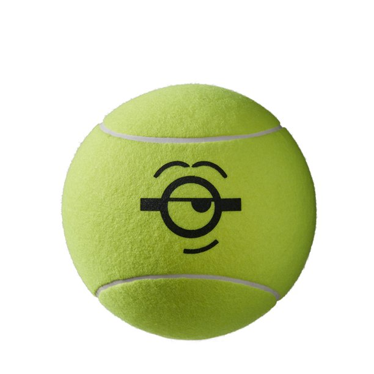 | Tennis Ball | • Jumbo yellow tennis ball size (9") • Can be for any age, kids or adults • Features minions-inspired logo design on ball • Perfect memorabilia for tennis fans to get autographs or display at home • Ships deflated | $14.00 | BUY |
| 2 | 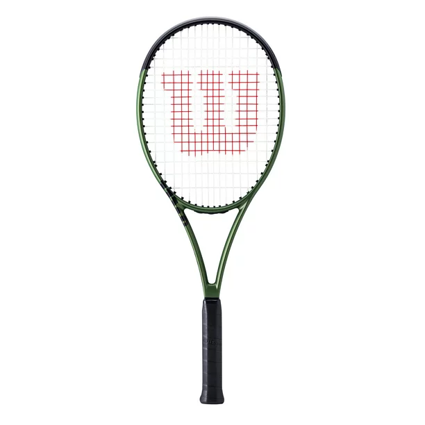 | Tennis Racket | • Thicker beam construction for additional stability and easier access to power • Frame geometry and design inspired by Blade v8 performance frames • Metallic green design flashes modern, vibrant look with every swing • Top Grip Taper provides better feel for top-hand grip placement • Ergonomic End Cap yields improved comfort and playability' Pre-strung with Wilson Sensation, a multifilament string built for arm-friendly comfort and playability | $139.00 | BUY |
| 3 | 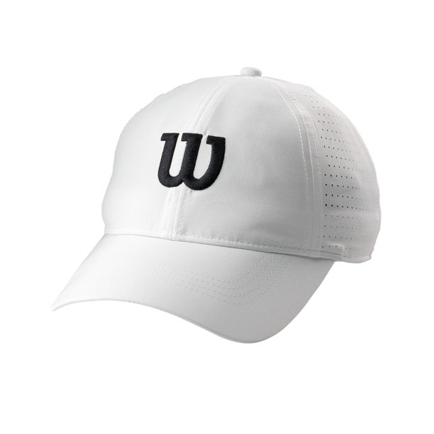 | Tennis Hat | • Ultralight polyester mesh knit body with with perforated side and back panels for enhanced ventilation • Lightweight and flexible brim • Adjustable hook & loop back closure | $19.97 | BUY |
| 4 | 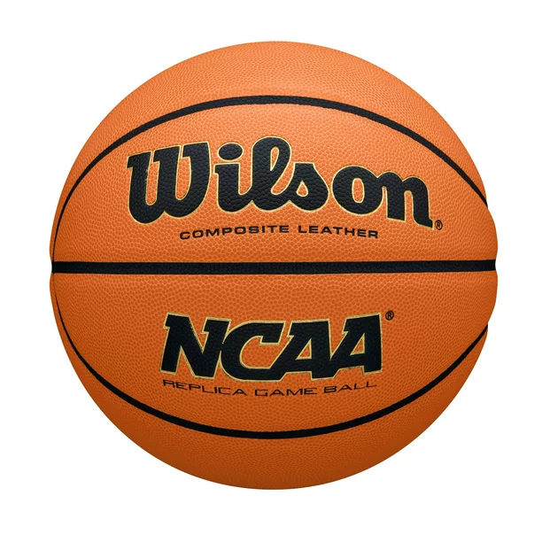 | Basketball | • Indoor/Outdoor: Built to dominate both basketball environments; Season-Long Durability: A premium core construction offers exceptional durability and shape retention, game after game • Consistent Control: Laid-in Composite Channels provide a consistent texture and grip over the entire ball for unparalleled control; Sizes: Color variations available in 29.5" (boys age 12 and up) and 28.5" (girls age 9 and up, and boys age 9-11); NCAA Replica: Feel what the players feel every March | $39.95 | BUY |
| 5 | 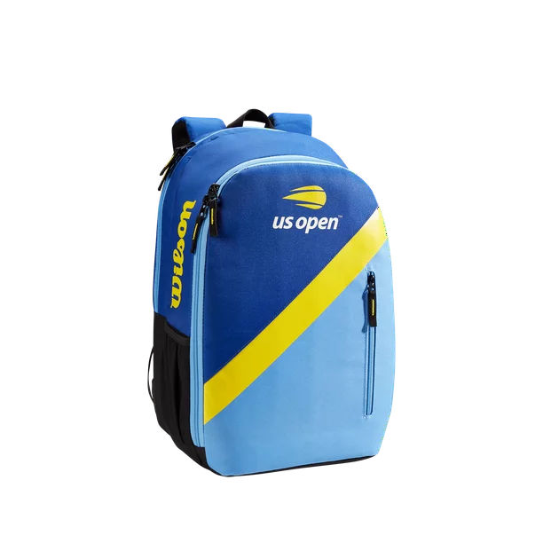 | Tennis Bags | • 2-Racket compartment with locking zippers • Additional compartment with laptop and tablet sleeve • Small exterior pocket in front stores valuables • Official logo of the US Open printed on front • Webbed hanging loop • Fabric composition: 100% polyester • Dimensions: 12 x 8.5 x 18" / 30.5 x 21.5 x 45.5 cm | $69.00 | BUY |
| 6 | 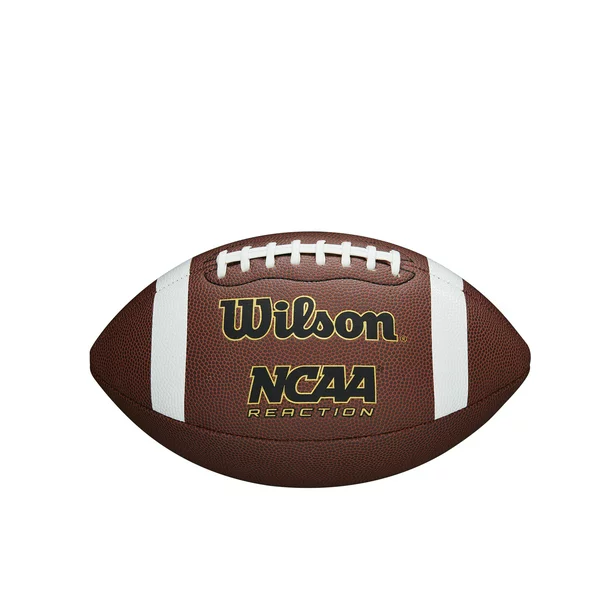 | Football Official Size | • Composite cover for an advanced grip; Multi-layered lining for consistent shape and durability; Rubber bladder for advanced air retention; NCAA branding; Also available in a junior size for players between 9-12 years old | $19.97 | BUY |
| 7 | 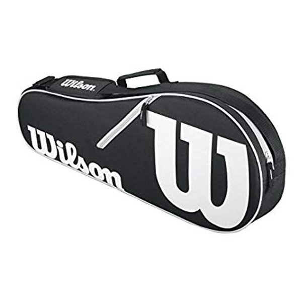 | Tennis Bag | • Zippered compartment holds up to 2 racquets • Zippered accessory compartment • Adjustable shoulder strap with pad • Metal zippers with fabric zipper pull | $44.00 | BUY |
| 8 | 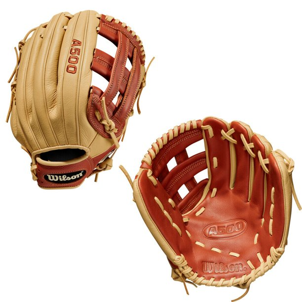 | Baseball Glove | • Pro Stock Leather: Pro Stock Leather is preferred for its rugged durability and unmatched feel • Dri-lex Wrist Lining: Keeps your hand dry and comfortable on the field and behind the dish. • ComfortPro™ Fit: Featuring our ProLux™ Leather, the liner of the redesigned A2000 has a richer, softer feel against your hand. The all-new Comfort Sleeve is the finishing touch, counseling the binding in the wrist for more comfort than ever before. • 11.75" • H-Web | $398.07 | BUY |
| 9 | 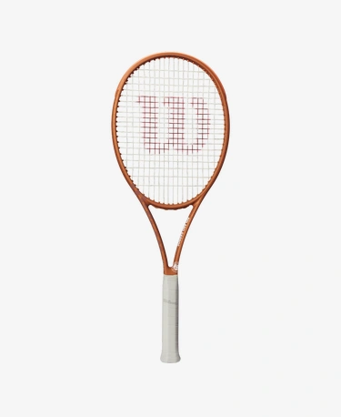 | Tennis Racket | • Learn how to play like a champion with the Serena 25, a 25" junior racket designed for beginning players. Featuring a new attractive design with fine details lining the frame, this racket provides some pop on comfortable, easy swings. Given the highly playable and fun nature of this collection, kids will be inspired to play like a legend when they pick one of these up. | $12.97 | BUY |
| 10 | 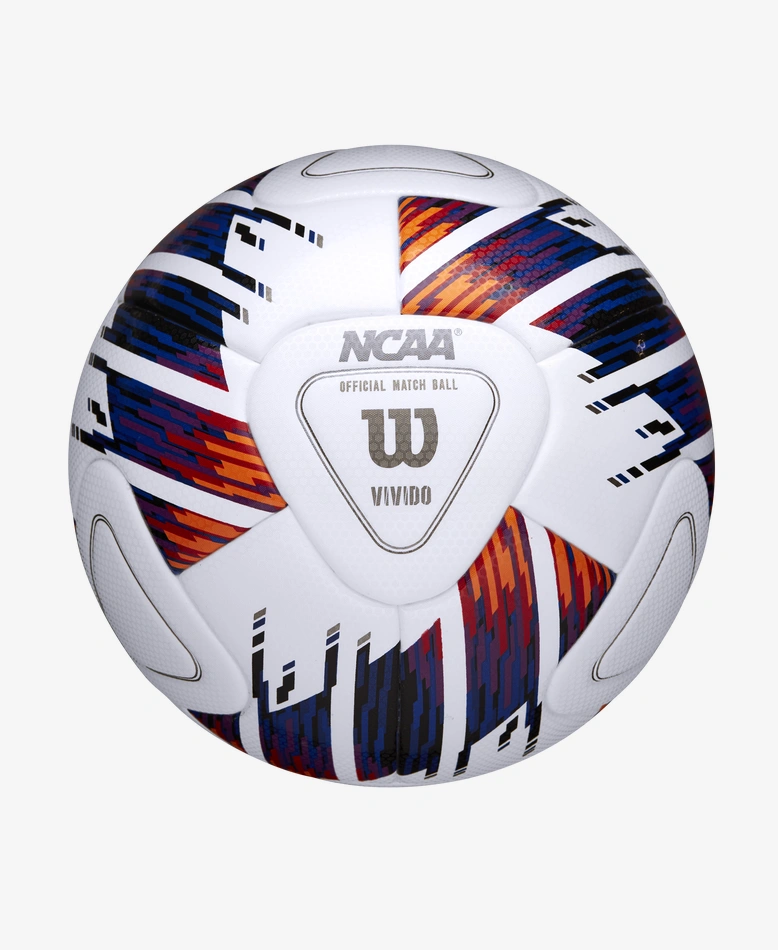 | Soccer | • Molten Unisex's 1000 soccer, White/Blue, Size 5 | $12.97 | BUY |
| 10 | 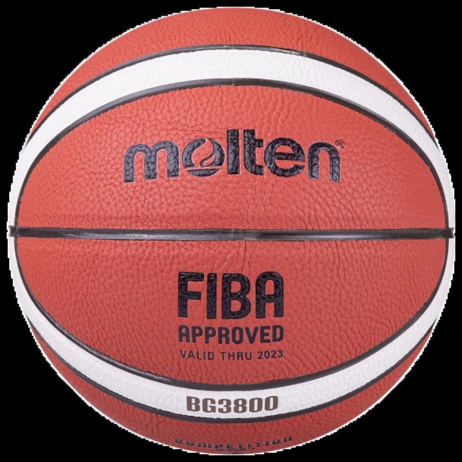 | Basketball | • FIBA Approved • Official 12 panel, 2-tone design • Indoor/Outdoor synthetic cover • Butyl Bladder • 1 year , Ships deflated | $68.90 | BUY |
| 10 | 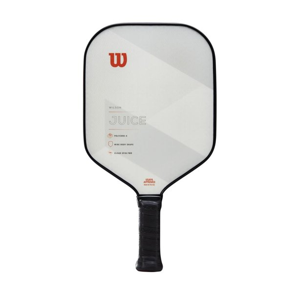 | Pickleball Paddle | • Polycore X features a polypropylene honeycomb core that dampens vibrations for superior feel on every stroke • PO3 fiberglass composite face comprises strong, lightweight material that delivers excellent responsiveness and shot depth • Clear spin TCH induces enhanced spin for added control with a circle-patterned print spin technology on the paddle surface • The classic shape creates an appealing mix of power, control, and feel; ideal for singles and doubles play • Approved by USAPA | $119.00 | BUY |